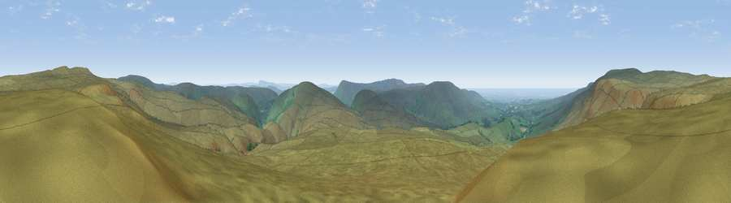

Viewpoint c9126_7240
#4997 in England · top 12% of its area beats it · — · open accessWhere it is
The exact computed spot (SD 62025 56275). Click the marker for map links.
Public access: this spot lies on mapped open-access land (CRoW Act 2000) — you may roam here on foot. Computed from Natural England's CRoW access layer and OpenStreetMap rights of way — not the legal definitive map. Always verify locally.
The view, rendered

A 360° render of this exact spot computed from the terrain model, tree cover and land cover — summer colours, afternoon light, calibrated against photographs of famous viewpoints. Real trees, hedges and buildings will differ in detail.
The panorama
Grey silhouette: terrain skyline in each direction (720 bearings, Earth curvature and refraction included). Dashed green: skyline with trees (+15 m) and buildings (+8 m) as obstacles. Blue strip: how far the ground is visible on each bearing.
Where the view opens
Wedge length = distance to the farthest visible ground on that bearing (vegetation-aware). Rings at 10, 25 and 50 km.
What fills the view
97% grassland · 2% woodland · 1% water
Angular shares of the visible panorama (visual magnitude), not map area. Landscape diversity 0.08 (0–1 Shannon).
Key numbers
More beautiful places nearby
The staircase of upgrades: each row has a higher view potential than everything closer. Driving times are estimates from straight-line distance, calibrated against real road routing — check an actual route before setting out.
| Place | Direction | Drive | Score |
|---|---|---|---|
| Viewpoint c9156_7259 | NNE · 2 km | ~5 min | 74.4 |
| Viewpoint c9157_7266 | NE · 2 km | ~6 min | 75.6 |
| Whins Brow | SSE · 3 km | ~8 min | 76.3 |
| Viewpoint c9170_7172 | WNW · 4 km | ~9 min | 77.0 |
| Grit Fell | WNW · 7 km | ~14 min | 77.3 |
| Viewpoint near Quernmore | WNW · 8 km | ~17 min | 78.0 |
| Viewpoint near Scorton | SW · 13 km | ~23 min | 79.9 |
| Warton Crag | NW · 21 km | ~35 min | 83.2 |
54.00110, -2.58082 · source: screening · position refined by local search. Computed location — check access rights before visiting.